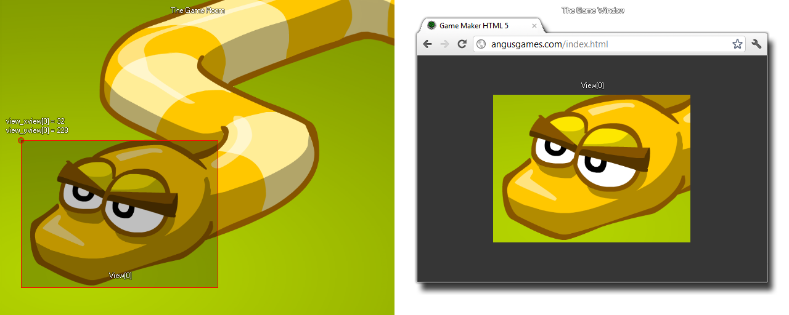

view_xview[0...7]
Returns: Real
This variable can be used to get or to set the x axis position
for the view in the room. By changing this value you can set the
view to a new position, with (0,0) being the upper left corner of
the room, or you can reference this variable to ensure that an
instance is always drawn at a relative position to the view (see
example code below). This value can also be negative and so show an
area that is outside of the room, in which case the window
colour will be used (this colour can be set with window_set_colour).

draw_text(view_xview[0] + 32, view_yview[0] + 32, "Score: " + string(score));
The above code will draw the score at a position relative to the x and y coordinates of view[0].